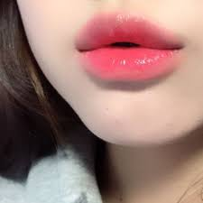
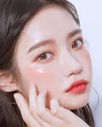

¿De qué hablaremos?
En este blog veremos tips de cuidado personal para que utilizan las coreanas para tener la famosa "piel de porcelana" y su estilo de maquillaje que es mas de estilo "al natural"
Presta atención a los siguientes tips:
¡Tips!
Rutina diaria de cuidado facial:
Rutina diaria de cuidado facial:
¿Se han preguntado cómo es que las coreanas tienen una piel tan perfecta?
¡Pues aquí te traemos los 10 pasos a seguir para lograr ese efecto de piel fresca y juvenil!
- Desmaquillante:
- Aceite de oliva
- Aceite de almendra
- Aceite de coco
- Aceite de ricino
- Aceite de rosas
- Aceite de argán
- Limpiador:
- Exfoliante:
- La piel seca debe exfoliarse 1 vez a la semana.
- Las pieles sensibles cada 10 días y probando en una pequeña parte del rostro poco visible, por ejemplo, tras las orejas.
- Las pieles grasas sin acné se pueden exfoliar 1 o 2 veces por semana.
- Si la piel es muy fina, se recomienda cada 15 días.
- Tónico:
- Esencia:
- Serúm:
- Mascarilla:
- Baba de caracol.
- Té verde.
- Contra el acné.
- Manchas en la piel.
- Arrugas.
- Contorno de ojos:
- Crema hidratante:
- Protector Solar:
Para las coreanas lo primordial es eliminar toda impureza del rostro lo primero es un desmaquillante de aceite. Esto se aplica dando masajes y se enjuaga, tienes que tener en cuenta el masaje en el rostro ya que es una manera de evitar las arrugas.
Los aceites que se recomiendan son:
Una vez realizado el primer paso, lo siguiente es aplicarse un jabón limpiador ue genere espuma al hacer contacto con el agua.
Este paso es uno de los más importantes, ya que la exfoliación ayuda a deshacernos de las celulas muertas y promueve la renovación celular. Se realiza 2 o 3 veces por semana. ¡NO A DIARIO!
Para que el pH de tu piel sea correcto, se debe hidratar y proteger la piel. No importa el tipo de piel que tengas, cuando emplees el tónico te ayudará a regular el balance de tu pH. Aplicalo con tu manos.
Es un producto más concentrado. La esencia ayudará a que tu piel esté más hidratada y ayudará a la elasticidad y firmeza de la piel.
Es una sustancia de activos que ayuda con los signos de la edad, acné, deshidratación entre otros, el más empleado es el que contiene vitaminas C.
También una buena almentación ayudará.
Para los coreanos el hidratar la piel es una de las cosas que hacen con más frecuencia, por eso, para brindar más humectación se emplean mascarillas.
Etc, depende de las necedidades de cada persona.
Debido a que el contorno de ojos es una de las partes más delicadas de nuestro rostro, se requiere un cuidado especial, por ello se emplea el contorno de ojos para reducir la inflamación de los ojos y signos de la edad.
Debido a la textura de la crema hidratantante, se aplica como noveno paso. Este producto termina sellando la hidratación de tu piel. Ten en cuenta la crema de hidratación de noche extra para dormir.
Como paso final, LO MÁS IMPROTANTE, el protector solar durante el día y la noche es lo que se emplea más por las coreanas porque se sabe que el sol puede dañar mucho tu piel, lo esencial es protegerla contra este.
Bueno, después de cuidar tu piel de esta manera disfruta del mauillaje si te gusta maquillarte, lo importante es que siempre deslumbres con tu piel bien cuidada.
Maquillaje:
En el maquillaje hay bastante diferencia entre oriente y occidente. En oriente se da más importancia a la piel natural sin apenas cobertura, mientras que en occidente, la alta cobertura en la piel es más buscada. Además otra diferencia es que las coreanas buscan el “brightening effect”, tonos que aclaran la piel.
Las coreanas empiezan con una base de maquillaje muy ligera, por ejemplo usando productos cushions. Es un producto muy famoso coreano, es una base de maquillaje en una esponja. La esponja hace que el producto salga más uniforme cuando se ejerce la presión en el rostro.
Otra opción sobre el maquillaje sería la BB cream, es el preferido de las coreanas, y el que llegó a Europa hace aproximadamente una década. Es una base de maquillaje muy ligera, sin apenas cobertura.
Todas las bases de maquillaje coreanas, independientemente del tipo, tienen en común que son ligeras, luminosas y en tonos claros.

El corrector en el maquillaje coreano no existe, es posible que esto se de a que la estructura del rostro es muy diferente al occidental. Para corregir las pequeñas ojeras que tienen las coreanas, utilizan el mismo cushion, ya que para ellas el corrector que utilizamos, tapona los poros.
Para que la “piel de cristal” que se había conseguido con la rutina de belleza coreana no se pierda, utilizan serums encima de la base de maquillaje. Esto hace que la piel vuelva a tener la jugosidad que aporta la rutina y el maquillaje tapa, aunque sea mínima la cobertura.
Este paso es muy diferente en el maquillaje de occidente, nunca utilizarían serums encima de sus bases de maquillaje. En Corea este paso es muy normal, los productos que utilizan para la rutina de belleza, también los emplean mientras se maquillan.
En Corea no utilizan ni bronceador ni contorno, lo único que utilizan son tintes para mejillas. Esto hace que el rostro sea más angelical, dando importancia a la ligereza y brillo natural.
En las cejas utilizan un producto en polvo muy suave que no las enfatice, solo un poco de definición. Los párpados se maquillan utilizando un solo color con brillo o purpurina. En las pestañas utilizan una máscara sutil que abra los pelitos y en algunas ocasiones pequeñas pestañas postizas.
Los tonos corales son los elegidos para los labios coreanos, vuelven a utilizar los tintes. Ponen una capa muy fina en todo el labio sin hacer los bordes muy marcados. Después en mayor cantidad, ponen el tinte más concentrado en el centro, haciendo un efecto de boca mordida.
La cosmética coreana es bastante diferente, no utilizan iluminadores, una de las cosas más destacable. En occidente el uso de iluminador es fundamental, se intenta que la piel brille, pero lo hacen con productos, mientras que las coreanas hacen que la piel brille por sí sola.
La piel de cristal pasa tanto por la rutina de belleza coreana como por la forma de maquillaje, es una mezcla de ambas, e igual de importantes. En Corea el cuidado de la piel o “Skin Care” es fundamental, por ello hay muchos más productos que se utilizan en esta parte que a la hora de maquillar la piel.
Aplicación de sombras y labiales:
En esta sección te vamos a mostrar como aplicarte las sombras y los labiales para obtener un estilo mas "natural" como el que utilizan las coreanas.
Maquillaje coreano de ojos paso a paso
El maquillaje coreano de los ojos suele caracterizarse por el uso de productos que agrandan visualmente tanto las cejas como los ojos. Por esta razón evitan el uso de sombras oscuras y delineadores en el párpado inferior del ojo ya que suelen causar el efecto contrario.
A continuación, te explicaremos con un sencillo paso a paso cómo maquillarte los ojos y las cejas siguiendo el estilo coreano:
- En primer lugar, traza una línea en el borde de las pestañas de la zona superior con un delineador negro sin hacer ningún rabo ni cola en el extremo del ojo. Tan sólo se trata de contornear el párpado superior.
- Ahora con un iluminador o un lápiz de ojos blanco tendrás que delinear los bordes del lagrimal del ojo. De esta forma, nuestro ojos parecerán visualmente más grandes.
- Finalmente tendrás peinar tus cejas hacia abajo y luego con la ayuda de un lápiz o una sombra para cejas tendrás que dibujar en forma recta. Es importante que el color del maquillaje sea lo más exacto posible al tono natural de tus cejas.
Maquillaje coreano: los labios
El maquillaje para los labios coreano destaca precisamente por intentar hacerlos más pequeños para crear un estilo muy sutil. De hecho, la técnica más popular dentro del estilo coreano es el maquillaje mordido que consiste en potenciar la parte interior del labio y difuminar el exterior de manera que parezca que han sido mordidos por el centro.
Si quieres saber cómo se realiza esta conocida técnica de maquillaje coreano para los labios sigue este sencillo paso a paso:
- En primer lugar, tendrás que utilizar el mismo corrector que hayas aplicado en el rostro en los labios para unificar su tono con el resto de la piel.
- Aplica en el centro del labio una barra de labios o un tinte labial de un tono rosado más oscuro y luego ya sea con tus dedos o un pincel para labios tendrás que difuminar el producto hacia fuera o los extremos de esta zona.
- Finalmente, aplica un gloss o brillo de labios transparente para darle un aspecto jugoso y saludable.
A continuación, puedes ver más imágenes de maquillaje coreano tanto de técnicas como de resultados.